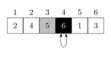

Week 2
In FXB G12 on Mondays, Kresge LL6 on Wednesdays.
Next problem set covers Big-O relationships.
Induction is introduced as useful for proving properties of algorithms.
“Now we do my favorite thing: repetition”
What did we do last Wednesday?
- Hash functions
- A mapping from \(f: S \to \texttt{32 bit numbers}\)
- Want them to be pseudorandom (as erratic as possible)
- They’ll be deterministic functions
- We use it for generating a random number
- Test whether two files are the same
- (Optional) Does the inverse exist?
- In order to apply in checking if the file transferred properly, erraticness is enough. Eratic hashing is also fine for defining a hash map. But cryptographic hashsums are necessary — for passwords, we want security, i.e., an inability to go backwards to the original data (input to hash function).
- Eratic means it satisfies the properties of “a good random number generator”
- Uniformity, independence, Diehard tests, replication, cycle length, speed, memory usage, cryptographically secure…
- A mapping from \(f: S \to \texttt{32 bit numbers}\)
Linear Congruential Generator
AES: Advanced Encryption System
How do we get real random numbers? We need to look for a natural process with randomness.
Hold a Geiger counter against the uranium: Times between the clicks are exponentially distributed. Cosmic background radiation also works.
Concepts of Algorithms
Contents:
- Concepts of algorithms: what is an algorithm? What flavors of algorithms exist?
- Complexity in time and space
- Recursion
- Divide-and-conquer paradigm
- Example: Sorting algorithms
- Example: Traditional and fast multiplication via divide-and-conquer.
What is an algorithm?
A finite list of instructions that is well-defined. We can think of it as a function from input to output space: \(f: S \to T\).
What properties do they have?
- Runtime: They can terminate after finite time, or have finite expected runtime.
- Complexity in time & space.
- Algorithms can be iterative, or recursive.
An instance of is a particular implementation of an algorithm. It should satisfy all the same properties as the original algorithm.
Things to keep in mind:
- Every step must be feasible.
- The algorithm terminates after a finite number of steps.
- Determinisms
There are two types of randomness: those that go into results, or those that don’t.
Two examples:
- Drawing random numbers; MCMC
- Sorting numbers (random runtime)





Let’s consider the runtime of insertion sort:
In step \(i\), we look at \(n-i\) values to compare.
\[ \sum_{i=1}^{n-1} n-i = \sum_{i=1}^{n-1} i = \frac{n(n-1)}{2} \sim n^2 \]
\[ \sum_{i=1}^n i^2 \sim n^3 \]
In general, is it always one more?
Yes, because we perform \(n\) operations of \(i^{...}\) complexity.
We can use comparison of an integral to a summation
\[ \sum_{i=1}^\infty i^2 \leq \int_{i=1}^{\infty} i^2 \]
Insertion Sort(A)
#| eval: false
for j <- 2 to length[A]
do key <- A[j]
> Insert A[j] into the sorted sequence A[1..j-1].
i <- j-1
while i > 0 and A[i] > key
do A[i+1]
i <- i - 1
A[i+1] <- keyOne way of proving correctness of a sequential algorithm consists in finding an invariant which is always true in each iteration independently of the progress of the algorithm.
Here: What is the invariant statement for insertion sort? The invariant is that in iteration i, in the array A[1..i-1] are sorted.
Growth of Functions and \(\mathcal O\)-notation
We define for functions \(f(n)\) and \(g(n)\):
- Asymptotically tight bound: \[ \begin{align*} \mathcal O(g(n)) & = \{ f(n) : \text{ there exist constants } c_1, c_2 > 0 \\ & \text{ and } n_0 \text{ such that } 0 \leq c_1 g(n) \leq f(n) \leq c_2 g(n) \forall n \geq n_0 \} \end{align*} \]
- Litte-o notation (convergence to zero):
\[\mathcal o(g(n)) = \left\{ f(n) \colon \lim_{n\to\infty} \frac{f(n)}{g(n)} = 0\right\}\]
- “Big-O” notation (asymptotic upper bound): \[ \mathcal O(g(n)) = \left\{ \begin{align*} & f(n) : \text{there exists constants } c > 0 \text{ and } \\ & n_0 \text{ such that } 0 \leq f(n) \leq cg(n) \forall n \geq n_0 \end{align*} \right\} \]
Upper-triangulization (Gaussian elimination) is \(\mathcal O(n^3)\).
For calculating the determinant, we can use either:
- Laplacian expansion: (use minors)
- Which gives us \(\mathcal O(n!) \subset \mathcal O(e^n)\).
- Do Gaussian elimination and then multiply the diagonal: \(\mathcal O(n^3)\). So this is \(\mathcal O(n^3) + \mathcal O(n)\), which is just \(\mathcal O(n^3)\).